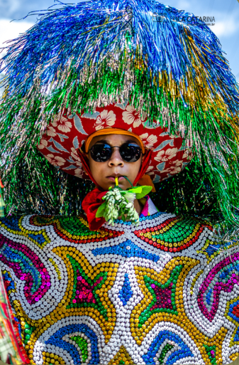

Atividade favorita de Arte

A tarefa do maracatu foi uma tarefa bastante divertida de apresentar, pois fazer a tarefa foi algo bastante trabalhoso Mas a apresentação no espaço do auditorio foi muito legal.